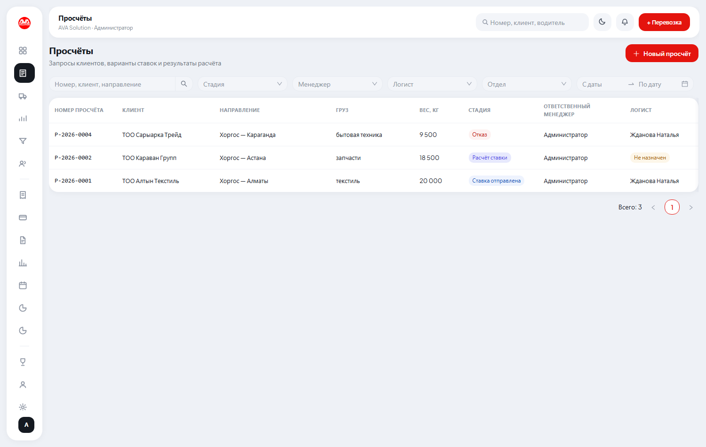
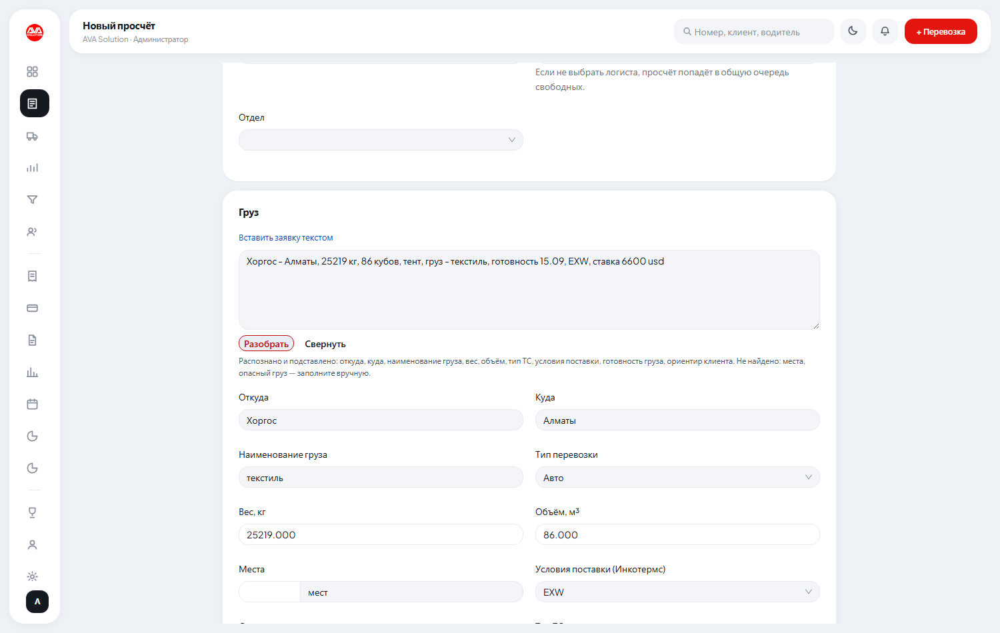
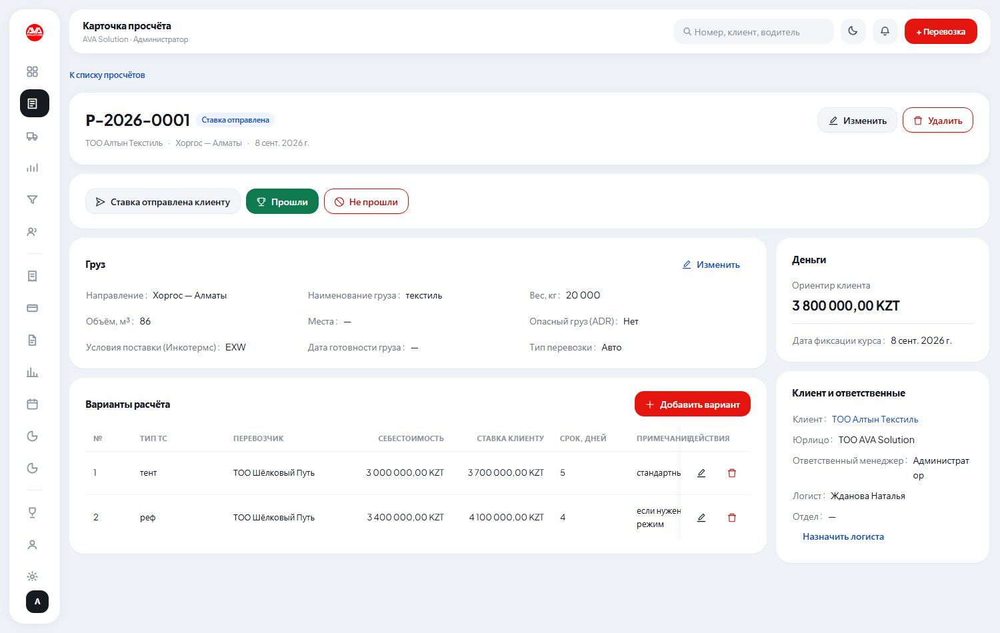

Инструкция для менеджера
Вы ведёте сделки от заявки клиента до закрытия: считаете ставку, согласуете условия, следите за перевозками внутри сделки и выставляете счета.
Вход в систему
Email и пароль выдаёт администратор. Поставьте галочку «Запомнить меня» только на своём рабочем компьютере.
Завести просчёт по запросу клиента
Всё начинается здесь. Клиент прислал запрос — раздел «Просчёты» → кнопка Новый просчёт.
Если клиент новый и его ещё нет в справочнике, переключите «Клиент» на Новый клиент
и просто напишите название: карточка заведётся с пометкой «потенциальный», реквизиты понадобятся
только когда дойдёт до договора.
Логиста выбирать необязательно. Если оставить поле пустым, просчёт попадёт в общую очередь и его возьмёт свободный логист вашего отдела.

Вставить заявку текстом, а не набирать руками
Над блоком «Груз» есть ссылка Вставить заявку текстом. Скопируйте сообщение клиента
из WhatsApp целиком и нажмите Разобрать — направление, груз, вес, объём, тип ТС,
условия поставки, готовность и названную клиентом ставку система разложит по полям сама.
Под полем ввода она честно пишет, что распознала, а что не нашла — не найденное заполните руками. Уже введённое вами не затирается. Если чего-то не поняла — это нормально: лучше пустое поле, чем неверный вес, который потом уедет в ставку.

Выставить ставку клиенту
Логист вписывает варианты расчёта: тип ТС, перевозчика, срок и себестоимость. Ваше дело —
проставить в каждом варианте ставку клиенту и нажать Ставка отправлена клиенту.
Не путайте три суммы: ориентир клиента — то, что назвал сам клиент (её видит и логист, он от неё отталкивается при поиске машины); себестоимость — сколько просит перевозчик; ставка клиенту — что мы выставляем. Последнюю логист не видит.

Отметить исход: прошли или не прошли
Прошли — выбираете выигравший вариант. Дальше система всё делает сама: снимает
с клиента пометку «потенциальный», превращает просчёт в перевозку с настоящим номером, создаёт
участок маршрута с перевозчиком и себестоимостью и предлагает сгенерировать договор, если его ещё нет.
Не прошли — причина обязательна (дорого / сроки / ушёл к конкуренту / не вышел
на связь / другое). Не пропускайте этот шаг и не выбирайте «другое» из лени: именно из этих причин
потом складывается отчёт, показывающий, где мы регулярно теряем клиентов.
Кнопка Прошли заблокирована, пока не назначен логист — у реальной перевозки
должен быть исполнитель.
Создать сделку
Раздел «Сделки» → кнопка Новая сделка. Укажите клиента и юрлицо, от которого работаете —
номер сделки присвоится автоматически (например, TT-2026-0004).

Вести сделку по стадиям
Внутри карточки сделки нажимайте на этапы шкалы: Новая заявка → Расчёт ставки → Ставка отправлена →
Согласована → В работе → Выполнена → Закрыта. Если клиент отказался — кнопка Отказ
с указанием причины (строго из списка: дорого / сроки / конкурент / не вышел на связь / другое).

Добавить перевозку и выставить счёт
Кнопка Новая перевозка открывает мастер из 4 шагов (сделка, груз, маршрут и перевозчик, проверка).
Счёт клиенту выставляется не отдельно, а прямо в карточке перевозки — там же видно, оплачен ли он.
Договор и акт
Кнопки Сгенерировать договор и Скачать акт по сделке в верхней части карточки сделки
собирают документ по бланку компании со всеми реквизитами автоматически.
Уведомления
Колокольчик в правом верхнем углу — просроченные перевозки, неоплаченные счета и истекающие договоры контрагентов (за 30 дней до окончания приходит именно ответственному менеджеру).